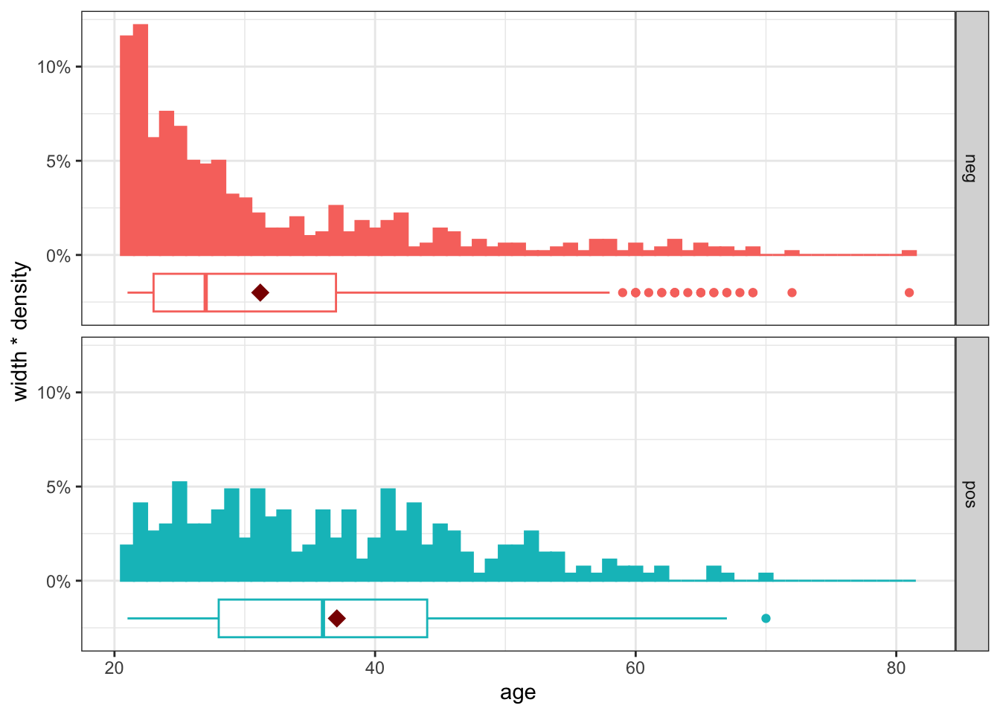
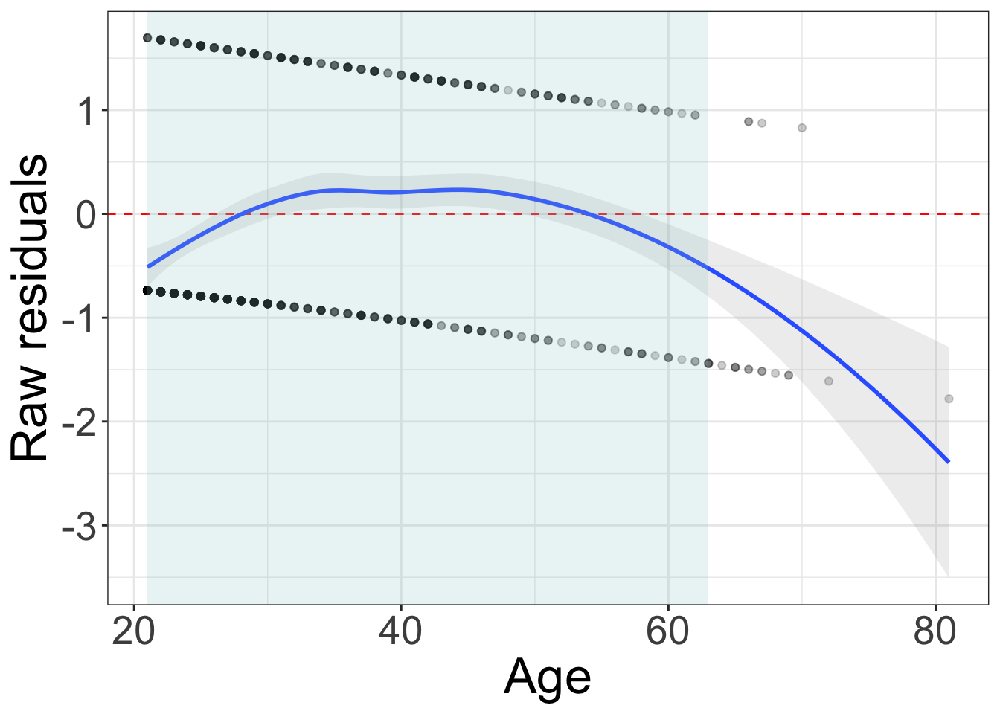
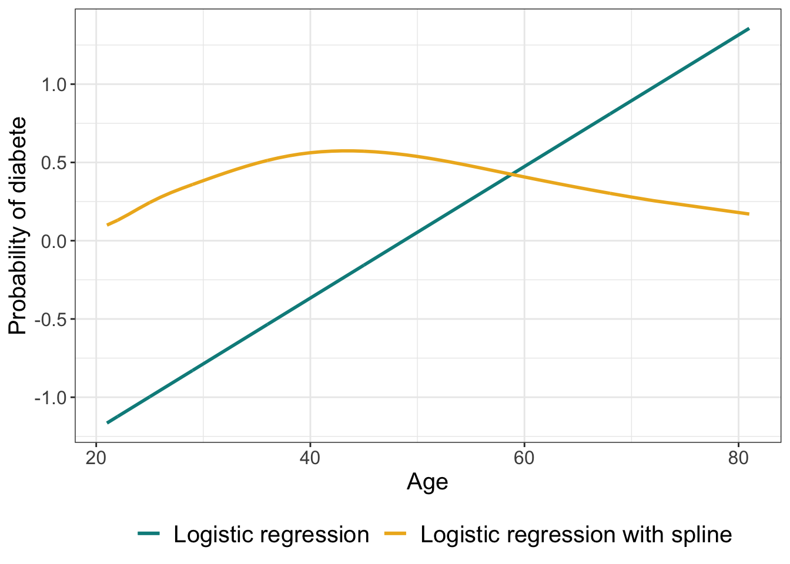
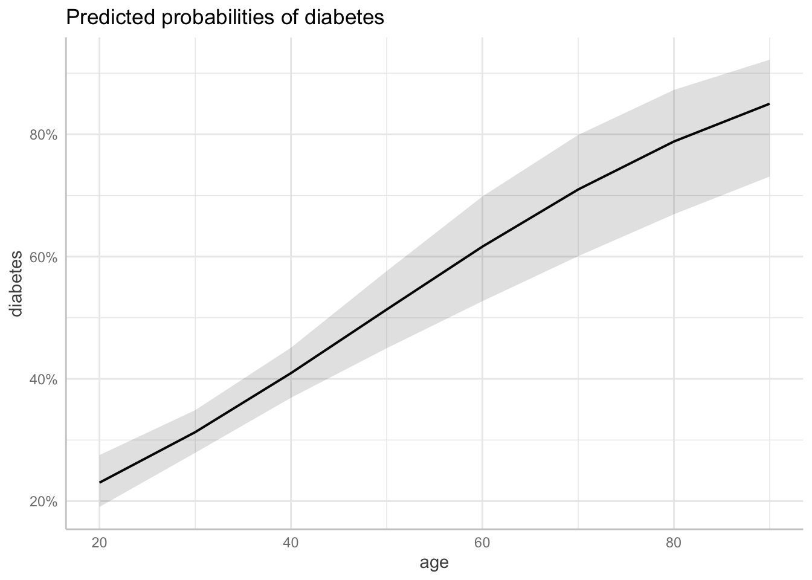
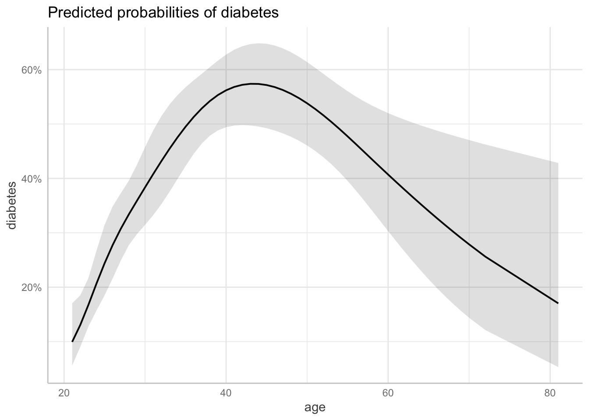
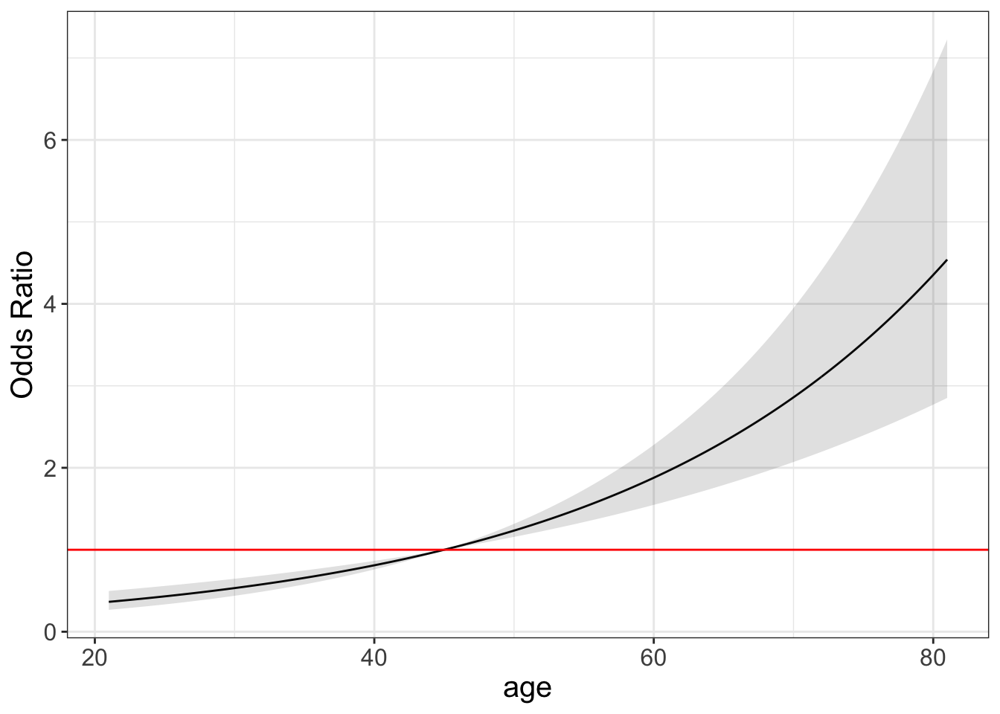
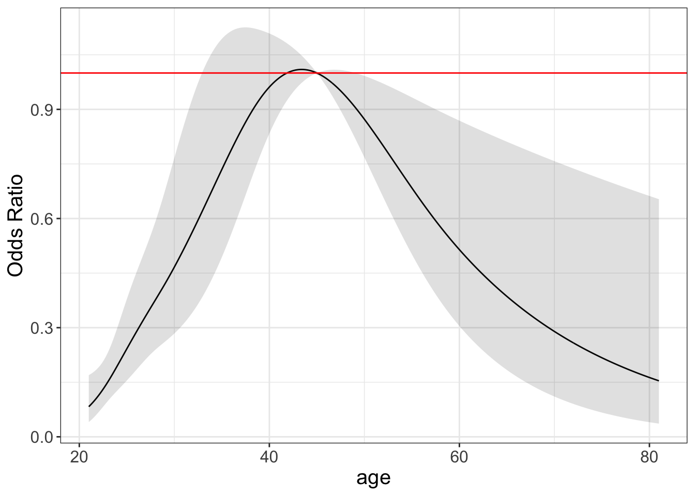

Code
library(dplyr)
library(ggplot2)
library(broom)
library(mlbench)
library(rms)
library(emmeans)
library(ggeffects)library(dplyr)
library(ggplot2)
library(broom)
library(mlbench)
library(rms)
library(emmeans)
library(ggeffects)data("PimaIndiansDiabetes2", package = "mlbench")
PimaIndiansDiabetes2 <- PimaIndiansDiabetes2
PimaIndiansDiabetes2$diabetes <- relevel(factor(PimaIndiansDiabetes2$diabetes), ref = "neg")
str(PimaIndiansDiabetes2)'data.frame': 768 obs. of 9 variables:
$ pregnant: num 6 1 8 1 0 5 3 10 2 8 ...
$ glucose : num 148 85 183 89 137 116 78 115 197 125 ...
$ pressure: num 72 66 64 66 40 74 50 NA 70 96 ...
$ triceps : num 35 29 NA 23 35 NA 32 NA 45 NA ...
$ insulin : num NA NA NA 94 168 NA 88 NA 543 NA ...
$ mass : num 33.6 26.6 23.3 28.1 43.1 25.6 31 35.3 30.5 NA ...
$ pedigree: num 0.627 0.351 0.672 0.167 2.288 ...
$ age : num 50 31 32 21 33 30 26 29 53 54 ...
$ diabetes: Factor w/ 2 levels "neg","pos": 2 1 2 1 2 1 2 1 2 2 ...dt_means <- aggregate(x = PimaIndiansDiabetes2$age, by = list(PimaIndiansDiabetes2$diabetes), FUN = mean) %>%
as.data.frame() %>%
rename(diabetes = "Group.1")
ggplot(PimaIndiansDiabetes2, aes(x = age, fill = diabetes, color = diabetes)) +
geom_histogram(aes(y=stat(width*density)), binwidth = 1) +
geom_boxplot(aes(y = -.02), width = .02, fill = NA, show.legend = FALSE) +
geom_point(data = dt_means, aes(x = x, y = -.02), shape = 18, colour = "darkred", size = 4) +
facet_grid(diabetes ~ .) +
scale_y_continuous(labels = scales::percent) +
theme_bw() + theme(legend.position="none")Warning: `stat(width * density)` was deprecated in ggplot2 3.4.0.
ℹ Please use `after_stat(width * density)` instead.
log_reg <- glm(diabetes ~ age, data = PimaIndiansDiabetes2, family = binomial)
# Summarize the model
summary(log_reg)
Call:
glm(formula = diabetes ~ age, family = binomial, data = PimaIndiansDiabetes2)
Deviance Residuals:
Min 1Q Median 3Q Max
-1.7809 -0.8512 -0.7505 1.2811 1.6950
Coefficients:
Estimate Std. Error z value Pr(>|z|)
(Intercept) -2.047511 0.238847 -8.572 < 2e-16 ***
age 0.042026 0.006587 6.380 1.77e-10 ***
---
Signif. codes: 0 '***' 0.001 '**' 0.01 '*' 0.05 '.' 0.1 ' ' 1
(Dispersion parameter for binomial family taken to be 1)
Null deviance: 993.48 on 767 degrees of freedom
Residual deviance: 950.72 on 766 degrees of freedom
AIC: 954.72
Number of Fisher Scoring iterations: 4plot residuals vs x
log_reg.pred <- augment(log_reg)
ggplot(log_reg.pred, aes(x=age, y=.resid)) +
geom_hline(yintercept=0, color = "red", linetype = "dashed") +
geom_point(alpha = 0.2) +
stat_smooth(method = "loess", formula = y ~ x, alpha = 0.17) +
theme_bw()+
theme(legend.text = element_text(size = 25),
text = element_text(size=25)) +
labs(x = "Age",
y = "Raw residuals") +
annotate("rect",
xmin = quantile(log_reg.pred$age,0.025),
xmax = quantile(log_reg.pred$age,0.975),
ymin = -Inf, ymax = Inf, alpha = 0.2, fill = "#99CCCC")
log_reg_spl <- glm(diabetes ~ rcs(age), data = PimaIndiansDiabetes2, family = binomial)
anova(log_reg, log_reg_spl, test = "LRT")Analysis of Deviance Table
Model 1: diabetes ~ age
Model 2: diabetes ~ rcs(age)
Resid. Df Resid. Dev Df Deviance Pr(>Chi)
1 766 950.72
2 763 898.97 3 51.748 3.389e-11 ***
---
Signif. codes: 0 '***' 0.001 '**' 0.01 '*' 0.05 '.' 0.1 ' ' 1The model with splines tends to fit better
AIC(log_reg, log_reg_spl) df AIC
log_reg 2 954.7203
log_reg_spl 5 908.9722anova(log_reg_spl)Analysis of Deviance Table
Model: binomial, link: logit
Response: diabetes
Terms added sequentially (first to last)
Df Deviance Resid. Df Resid. Dev
NULL 767 993.48
rcs(age) 4 94.512 763 898.97summary(log_reg_spl)
Call:
glm(formula = diabetes ~ rcs(age), family = binomial, data = PimaIndiansDiabetes2)
Deviance Residuals:
Min 1Q Median 3Q Max
-1.3061 -0.9169 -0.5292 1.1064 2.1482
Coefficients:
Estimate Std. Error z value Pr(>|z|)
(Intercept) -8.7178 3.2530 -2.680 0.00736 **
rcs(age)age 0.3102 0.1419 2.186 0.02880 *
rcs(age)age' -3.7094 4.1087 -0.903 0.36661
rcs(age)age'' 5.7888 7.2392 0.800 0.42391
rcs(age)age''' -2.2401 3.5722 -0.627 0.53060
---
Signif. codes: 0 '***' 0.001 '**' 0.01 '*' 0.05 '.' 0.1 ' ' 1
(Dispersion parameter for binomial family taken to be 1)
Null deviance: 993.48 on 767 degrees of freedom
Residual deviance: 898.97 on 763 degrees of freedom
AIC: 908.97
Number of Fisher Scoring iterations: 4😭
log_reg_spl.pred <- predict(log_reg_spl, type = "response")
ggplot(log_reg.pred, aes(x = age)) +
geom_line(aes(y = .fitted, color = "Logistic regression"), linewidth = 1) +
geom_line(aes(y = log_reg_spl.pred, color = "Logistic regression with spline"), linewidth = 1) +
scale_color_manual(values=c("Logistic regression" = "cyan4",
"Logistic regression with spline" = "goldenrod2")) +
labs(x = "Age", y = "Probability of diabete", color = "") +
theme_bw() +
theme(legend.title = element_text(size = 15, face = 'bold'),
legend.text = element_text(size = 15),
text = element_text(size=15),legend.position="bottom")
#### Visualization
ggemmeans(log_reg, terms = "age") %>%
plot(add.data = F)Data were 'prettified'. Consider using `terms="age [all]"` to get smooth
plots.
ggemmeans(log_reg_spl, terms = "age") %>%
plot(add.data = F)
We compare to age 45.
age_range <- with(PimaIndiansDiabetes2, seq(min(age),max(age), by = .2))
ref <- 45
log_reg.emm <- emmeans(log_reg, ~ age, at = list(age = age_range), type = "response")
log_reg.ctrs <- emmeans::contrast(log_reg.emm, "trt.vs.ctrl", ref = paste0("age", ref),
infer = T, adjust = "none")
log_reg.ctrs %>%
as.data.frame() %>%
bind_cols("age" = age_range[age_range != ref]) %>%
ggplot(., aes(x=age, y=odds.ratio)) +
geom_line() +
geom_ribbon(aes(ymin=asymp.LCL, ymax=asymp.UCL), alpha=0.15, linetype=0) +
geom_hline(yintercept=1, color = "red") +
labs(x = "age", y = "Odds Ratio") +
theme_bw() +
theme(legend.title = element_text(size = 15, face = 'bold'),
legend.text = element_text(size = 15),
text = element_text(size=15),legend.position="bottom")
log_reg_spl.emm <- emmeans(log_reg_spl, ~ age, at = list(age = age_range), type = "response")
log_reg_spl.ctrs <- emmeans::contrast(log_reg_spl.emm, "trt.vs.ctrl", ref = paste0("age", ref),
infer = T, adjust = "none")
log_reg_spl.ctrs %>%
as.data.frame() %>%
bind_cols("age" = age_range[age_range != ref]) %>%
ggplot(., aes(x=age, y=odds.ratio)) +
geom_line() +
geom_ribbon(aes(ymin=asymp.LCL, ymax=asymp.UCL), alpha=0.15, linetype=0) +
geom_hline(yintercept=1, color = "red") +
labs(x = "age", y = "Odds Ratio") +
theme_bw() +
theme(legend.title = element_text(size = 15, face = 'bold'),
legend.text = element_text(size = 15),
text = element_text(size=15),legend.position="bottom")